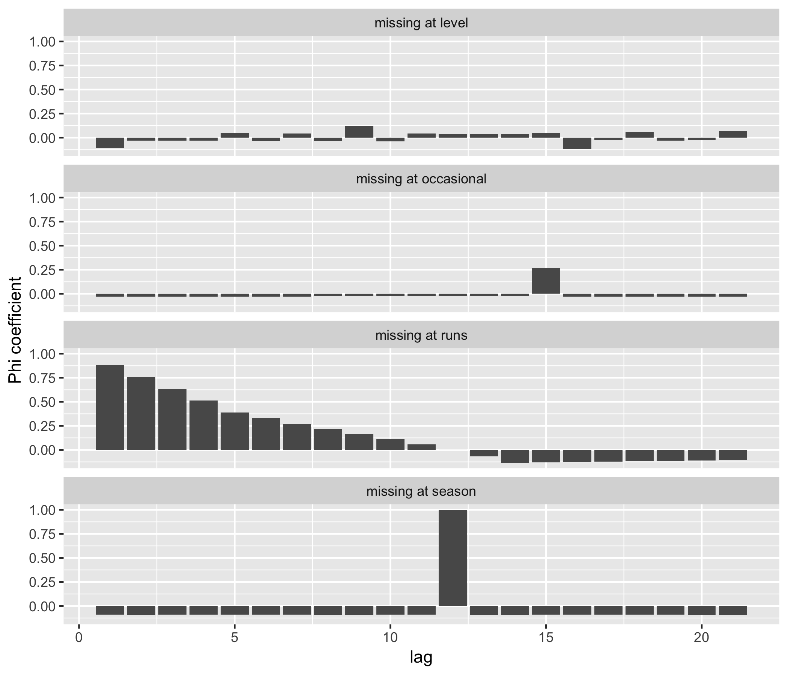

4.3 Tools for exploring temporal patterns of missingness

Figure 4.2: Autocorrelation plots using the phi coefficients corresponding to the binary form of Figure 4.1.
Figure 4.2: Autocorrelation plots using the phi coefficients corresponding to the binary form of Figure 4.1.